Local Guide
Around Town.
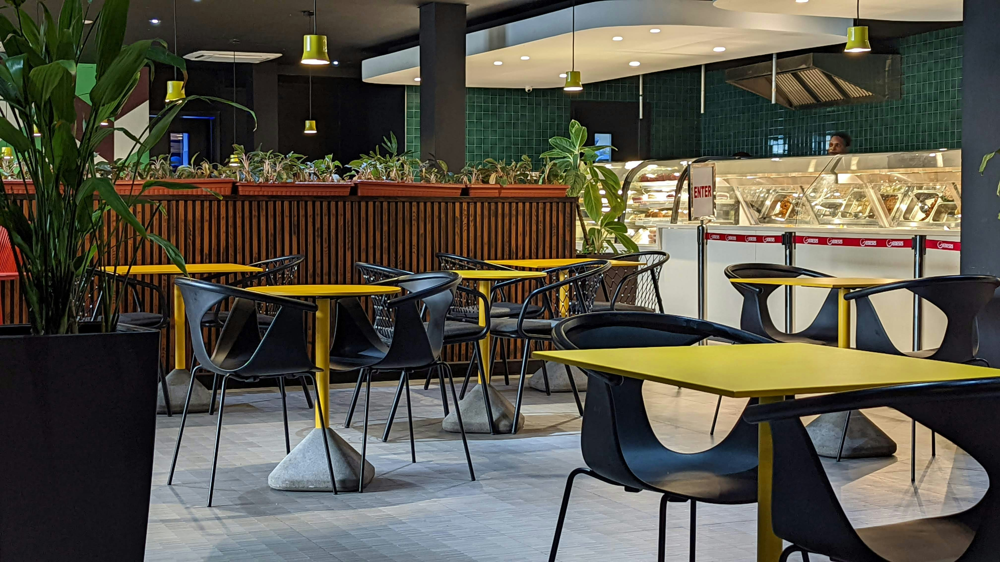
Le Clos des Oliviers
Authentic Provençal cuisine with a stunning terrace view of the vineyards.
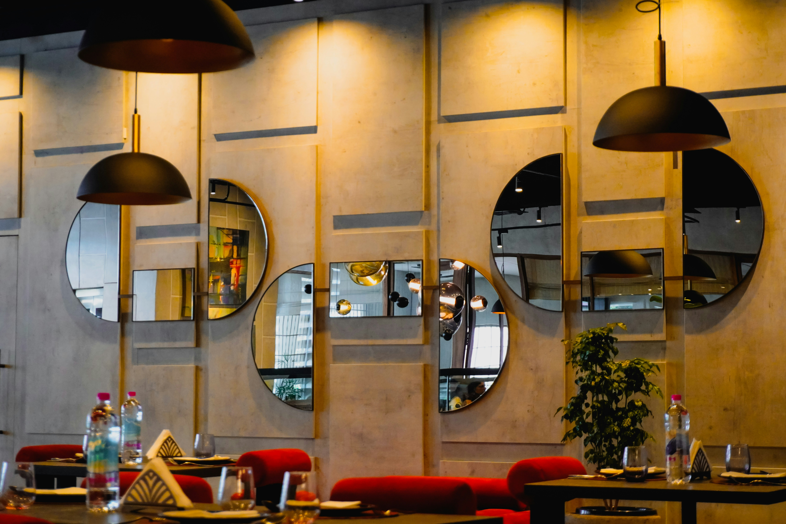
La Villa Madie
Michelin-starred dining with a panoramic view of the Calanques.
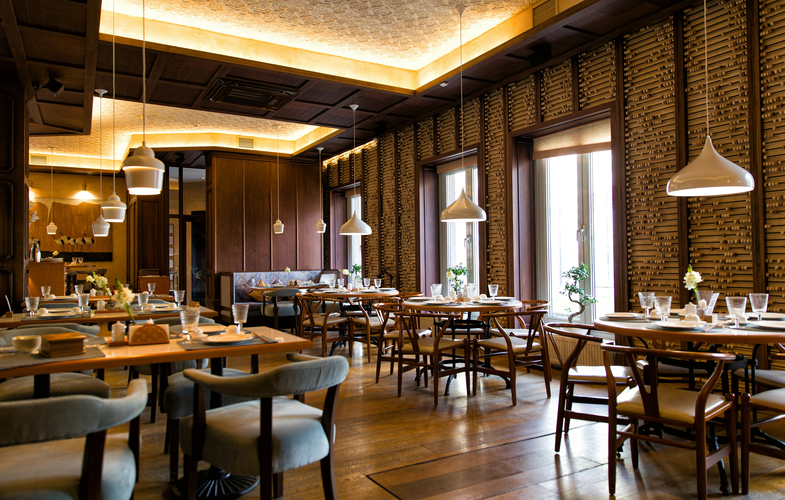
Chez Gilbert
A local favorite for fresh seafood and traditional bouillabaisse.
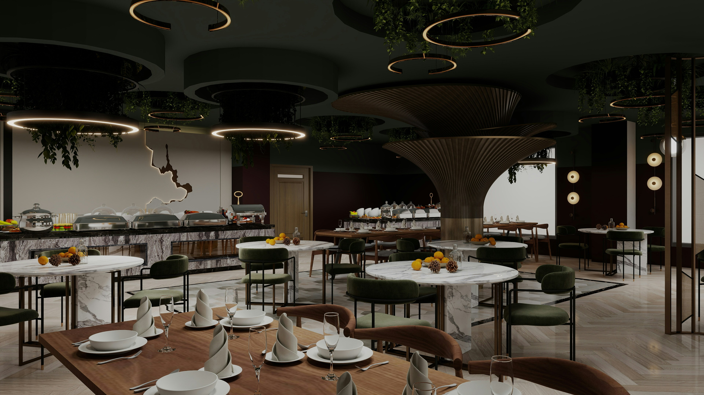
Le Bonaparte
Casual bistro offering great pizzas and a lively atmosphere on the port.
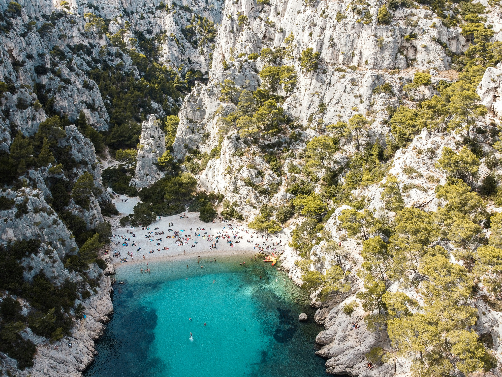
Plage de la Grande Mer
10 min drive · FreeThe main beach in Cassis. Perfect for swimming and sunbathing. Get there early.
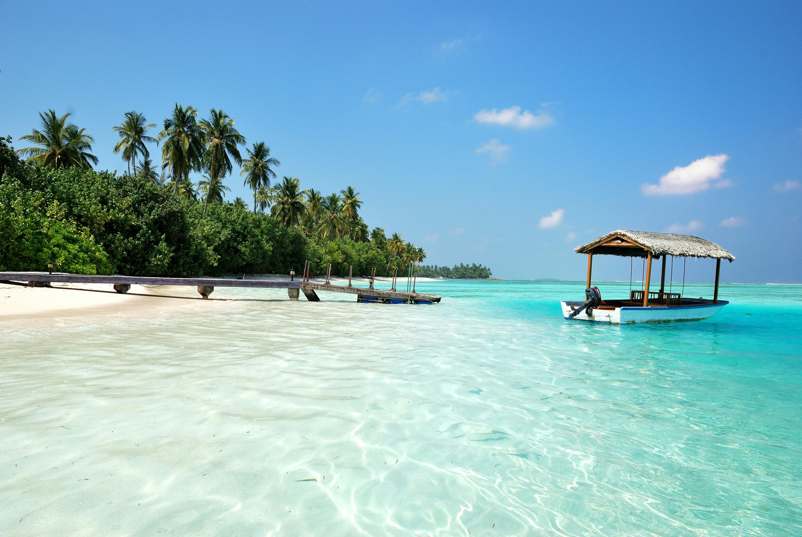
Plage du Bestouan
12 min walk · FreeA smaller, pebbled beach known for its crystal-clear water and snorkeling.
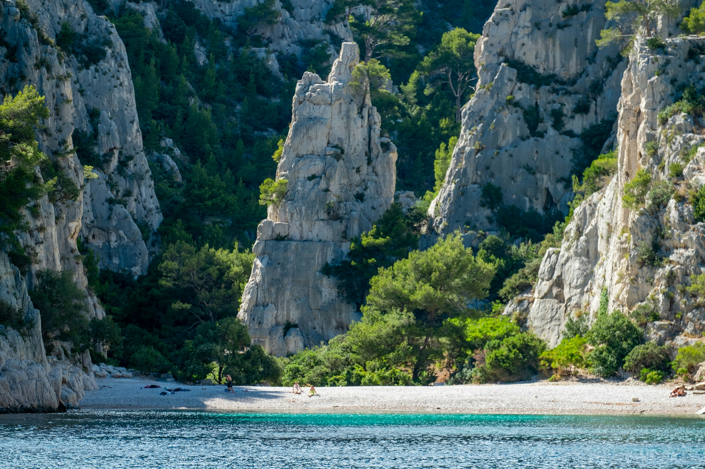
Calanque de Port-Miou
20 min drive · FreeA stunning natural fjord. Great for hiking and photography.
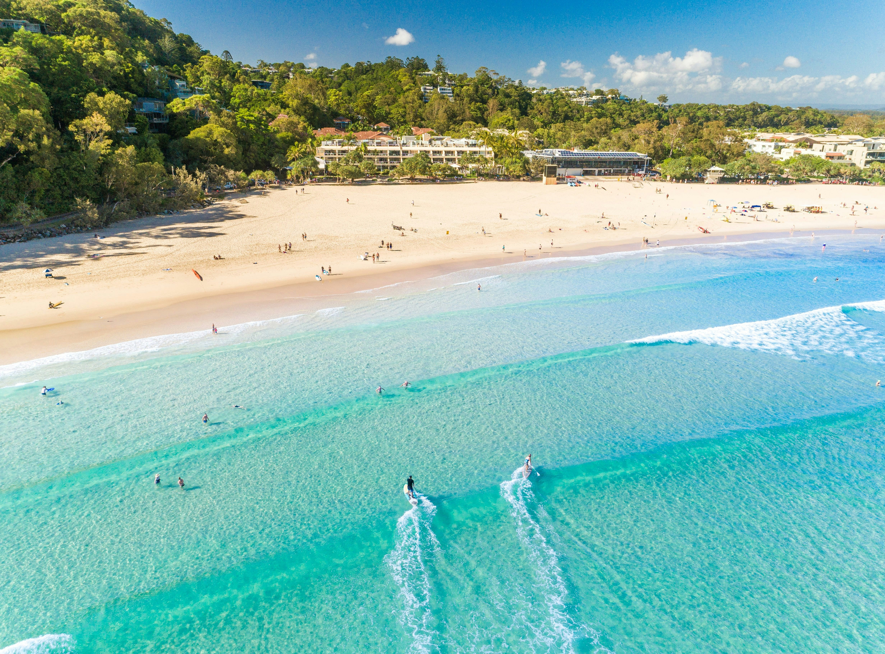
Plage de l'Arène
8 min walk · FreeLocated right next to the town center. Convenient and family-friendly.
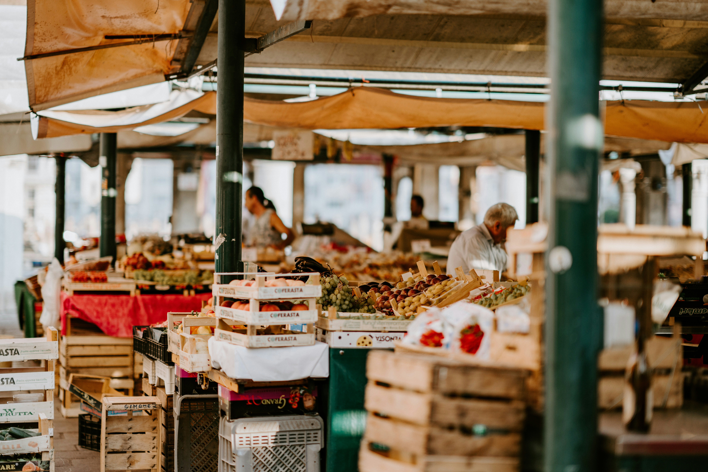
Marché de Cassis
8 min walk · FreeOpen every Wednesday and Friday morning. Fresh produce, cheese, and olives.
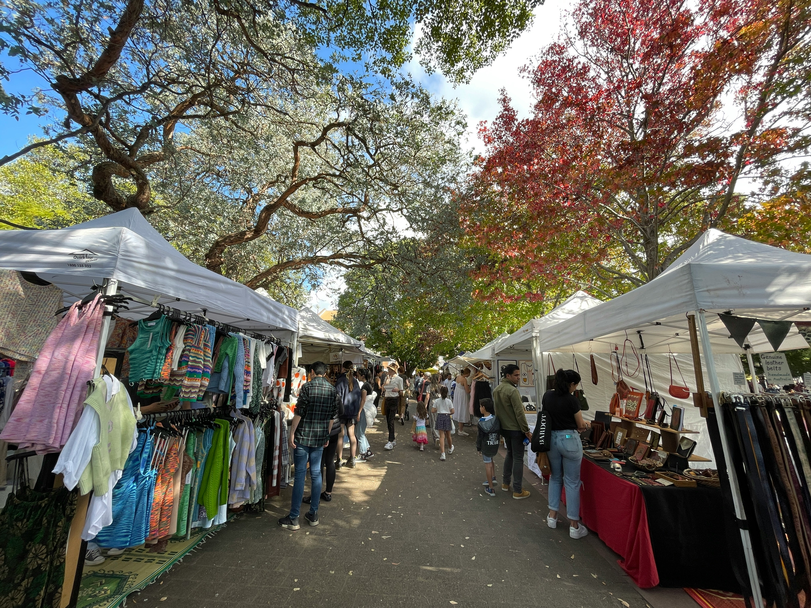
Marché aux Poissons
7 min walk · FreeDaily fish market on the port. Get the catch of the day straight from the boats.
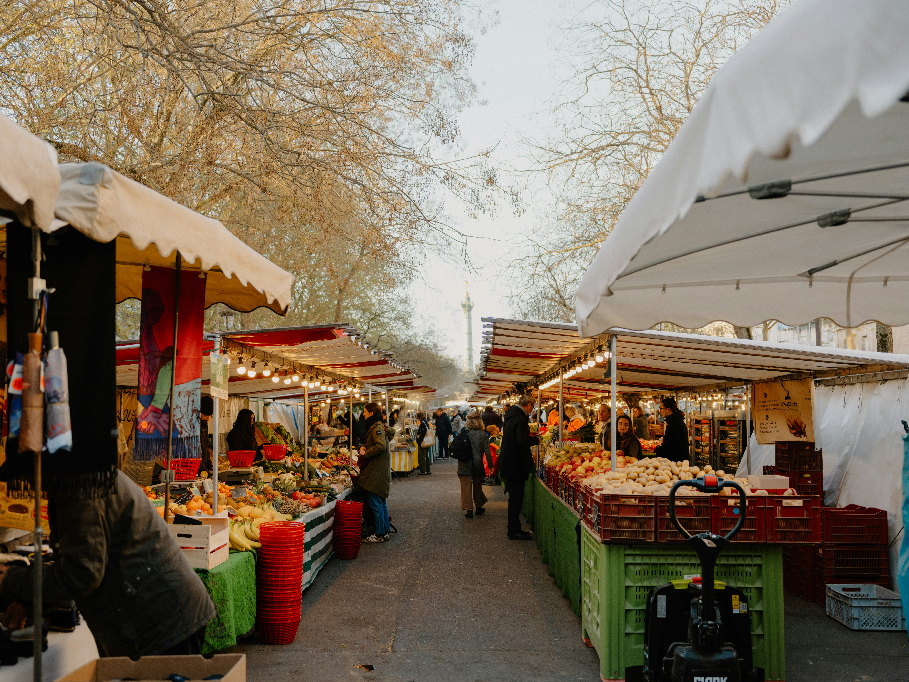
Marché Provençal
9 min walk · FreeLavender, herbs, and local crafts. A great spot for souvenirs.
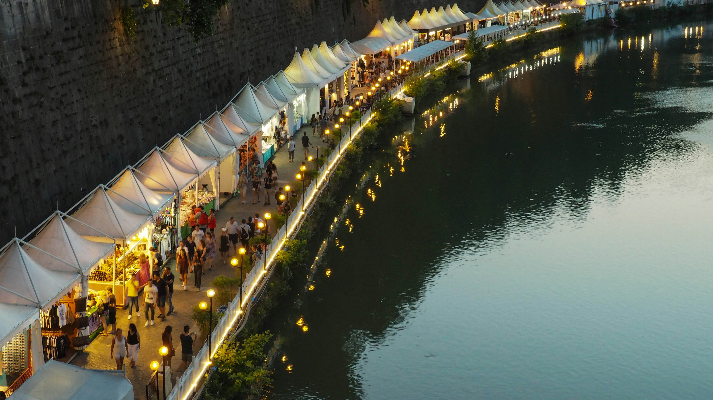
Marché Bio
10 min walk · FreeOrganic market held every Tuesday. Perfect for health-conscious travelers.